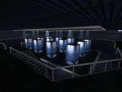
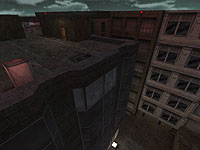

» The Hud
» The Maps
» Game Elements
» Playing
» Cvars
In beta 1.4 there is only one game mode, which is planting the bomb and destroying the target. All maps follow this same template, but all have subtle differences and targets.
ex_blackout:
This is a smallish, tight and fast paced map. The rebels must bomb the DIL room and activate the hardline beside the park. If Dr White is captured he is held on the top floor of the Neurotek buidling.


ex_hardline:
The mother map, this is the template from which all existence maps should draw at least SOME inspiration from. Hardline a hugely vast map, being one of the tallest made. The objective here is to bomb either the mainframe room, or the super agent tank room, both located inside the neurotek building and having a number of ways in. If Dr White is captured he is held on the top floor, but has a way of escaping himself if he has enough loading points. A skylight in the room is a means of escape, alternatively a rebel player can jump in there and boost him out, sacrificing themself. The hardline can be found behind the White Rabbit nightclub.
 


ex_highway:
A change from the norm, ex_highway disables the use of the high jump ability and instead goes for full on action. Routes through sewers and buildings means theres plenty of battle arenas. The rebels this time have to bomb a super agent holding room and activate the hardline switch located in the sewers.